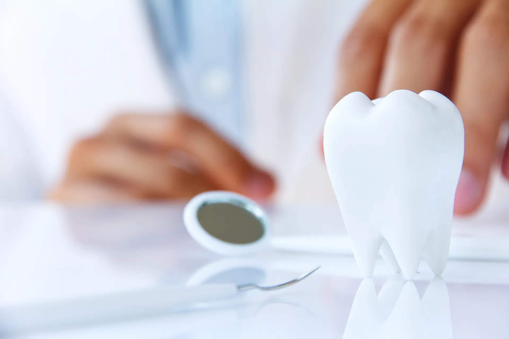
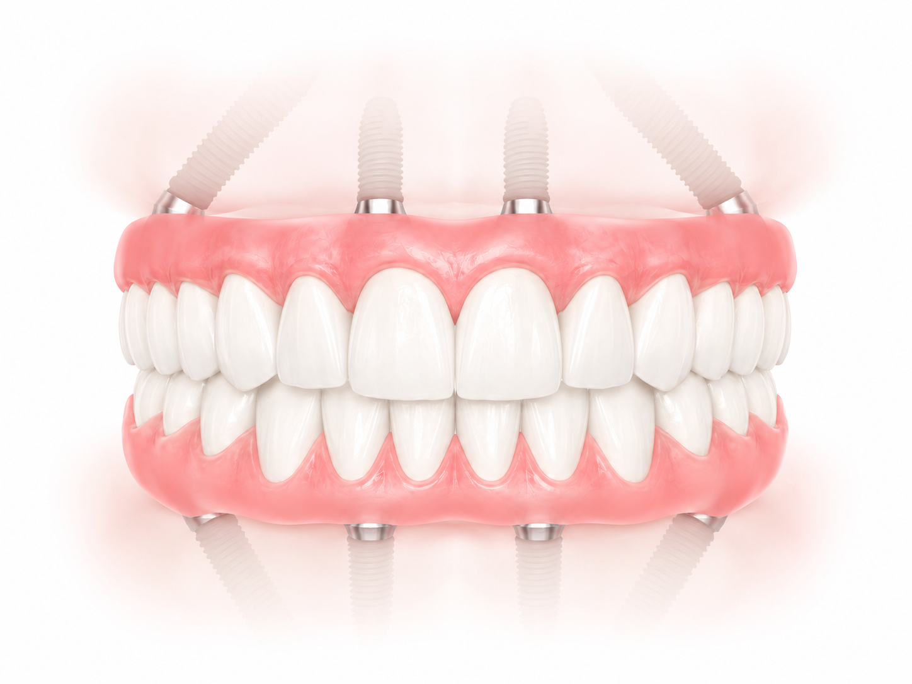
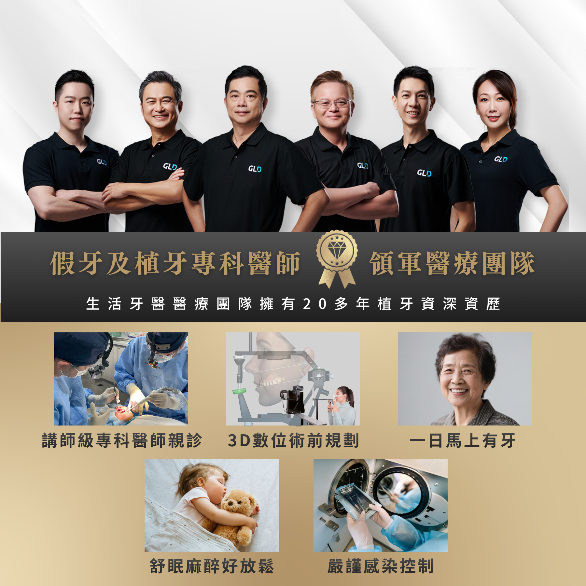
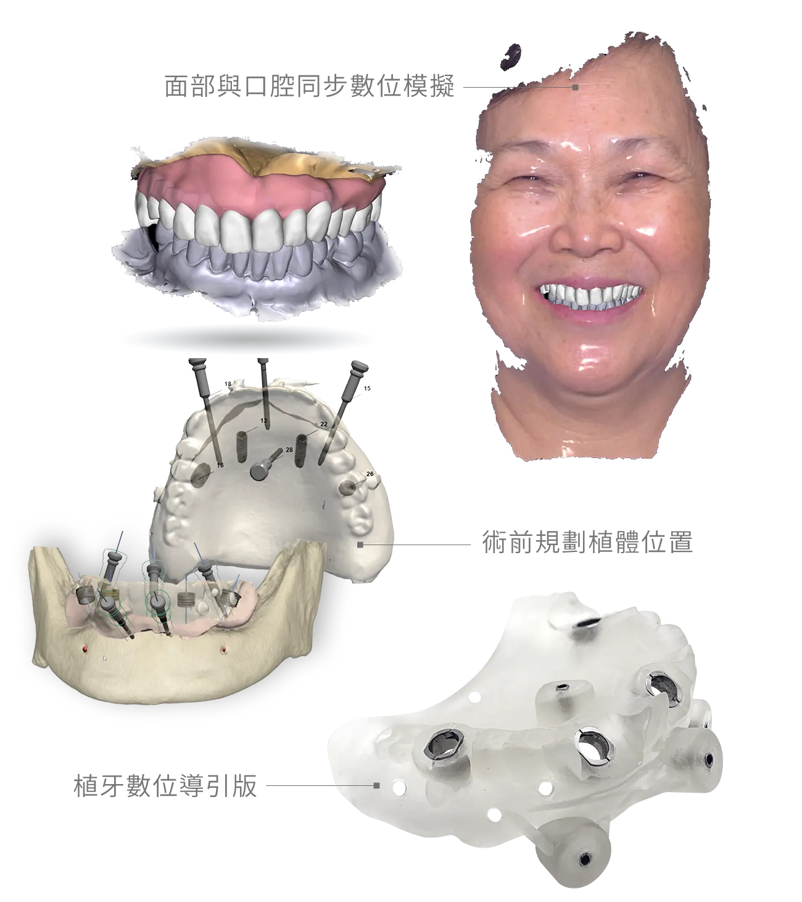

柳朝升醫師
- 國防醫學院牙醫系學士
- 四川大學華西口腔醫學院口腔種植科碩士
- 衛生署口腔顎面外科專科醫師
- 三軍總醫院口腔外科主治醫師
- ICOI 國際口腔植體學會專科醫師
- 中華民國植牙醫學會專科醫師
重建穩定咀嚼與自然笑容
針對全口缺牙、嚴重缺牙或長期配戴活動假牙不適的患者，透過數位評估、植體支撐與固定式假牙規劃， 協助重建咀嚼、說話與笑容的穩定感。

All-On-4 是以四至六支植體作為支撐，搭配固定式全口假牙，協助全口缺牙或嚴重缺牙患者恢復穩定咀嚼與自然外觀。
All-On-4 一日全口重建會依照骨質條件、咬合高度、臉型比例與生活需求進行整體評估。醫師透過植體角度與力學規劃，讓整排假牙獲得穩定支撐，免除傳統活動假牙的鬆動、壓痛與異物感。
生活牙醫數位植牙醫療團隊擁有特殊專利支柱，可於手術當日裝戴假牙，復原後可提供強大咬力，以最快速度恢復基本美觀、飲食起居與日常社交。

全口缺牙、嚴重缺牙或長期配戴活動假牙不適者，可先安排 All-On-4 全口重建評估；醫師會綜合骨質、咬合、口腔健康與全身狀況判斷適合方式。
全口缺牙，或上下顎多顆牙齒已無法穩定保留，希望以固定式假牙重建咬合者。
長期配戴活動假牙，常有鬆動、壓痛、咀嚼無力或異物感，影響進食與日常生活者。
經完整評估後，條件適合於手術當日裝戴臨時固定假牙，減少無牙等待時間者。
傳統植牙可能需要大量補骨，但現有骨質條件可評估以傾斜植體進行全口重建規劃者。
希望改善咀嚼功能、嘴唇與臉部支撐，並恢復日常社交自信者。
生活牙醫數位植牙團隊擁有 25 年植牙資深資歷，整合假牙、植牙與牙技師醫療團隊，數位化規劃 All-on-4 全口重建。

All-On-4 需要完整術前評估與術後追蹤，每個階段都會依個人骨質、咬合與全身健康條件調整。



| 比較項目 | All-On-4推薦 | 活動假牙 | 傳統多顆植牙 |
|---|---|---|---|
| 穩定度 | ◎ 固定式支撐 | △ 容易鬆動 | ◎ 穩定度高 |
| 療程時間 | ◎ 手術當天立即有牙 | ◎ 製作較快 | △ 多階段治療 |
| 咀嚼功能 | ◎ 接近固定牙感受 | △ 受假牙穩定度影響 | ◎ 功能佳 |
| 異物感 | ◎ 體積較精簡 | ● 覆蓋面積較大 | ◎ 依設計而定 |
| 適合對象 | 全口缺牙、嚴重缺牙、活動假牙不適 | 預算有限或暫時性使用 | 骨量充足且可接受較長療程者 |
All-On-4 的成功關鍵，不只在植體本身，更在於術前如何整合骨質、咬合、臉型支撐與假牙空間。
生活牙醫會透過影像資料、口腔掃描與咬合評估，分析上下顎骨量、神經與鼻竇位置、植體可用角度，以及臨時假牙與正式假牙需要的支撐空間。
在手術前，醫師會與您討論重建目標、假牙外型、笑容支撐與飲食需求，讓治療計畫不只是「有牙」，而是能兼顧美觀、功能與長期維護。

整合多位口顎外科專科、植牙專科、假牙贋復專科醫師及牙體技術師，25 年植牙經驗、德國植體廠牌指定講師團隊。


嚴選真實案例，由專業醫師團隊親自操刀，沒有千篇一律的療程，只有最適合你的量身規劃


整理諮詢時常見問題，協助您先了解療程條件、恢復期與後續維護。
整理諮詢時常見的問題，協助您在看診前先掌握基本方向。
歡迎預約諮詢，由醫師一對一親診為您規劃療程，讓我們一起打造最符合需求的治療方案